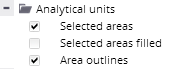
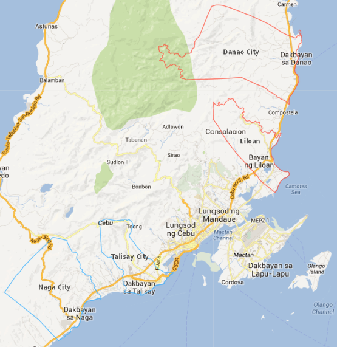
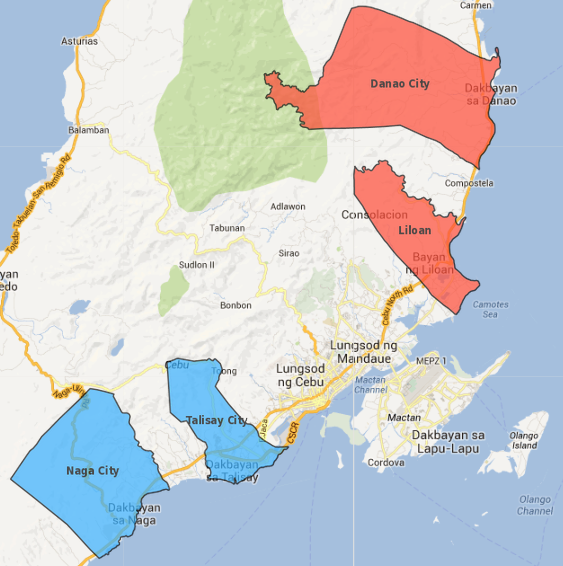
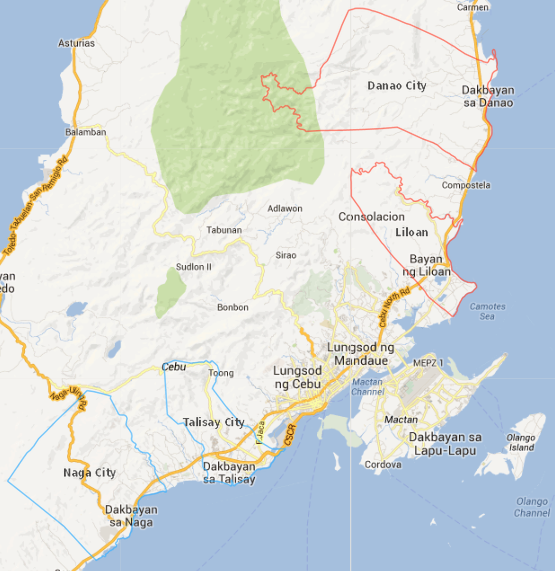
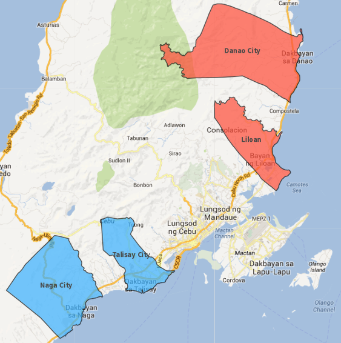
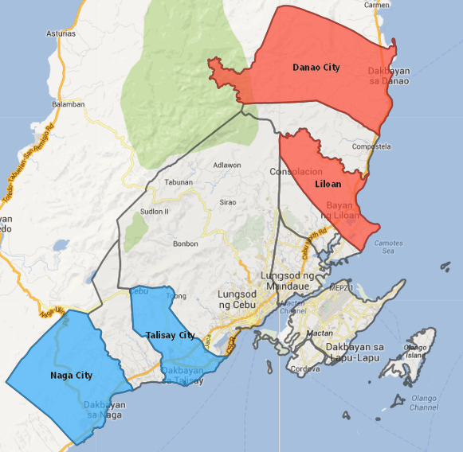
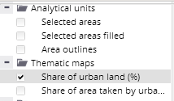
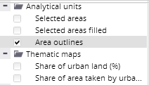

Analytical units' layers contain outlines of analytical units and selected analytical units.

Outlines for the levels of units that are currently expanded in the hierarchical units' tree and displayed in the map, are accessible via this panel.
The "Area outlines" layer contains borders of all analytical units.
The layer called "Selected areas" contains highlighted borders of currently selected analytical units.
For better orientation in the map, the layer called "Selected areas filled" can be switched on, which shows whole polygons of selected units filled in by corresponding selection color.
  
 
All three above-mentioned layers can be switched on at the same time.

In order to avoid outlines duplication, the units' outlines are automatically switched off in case any thematic map is switched on and vice versa:
 x 
Both thematic map and units outlines can only be switched on at the same time by holding down the CTRL button when switching the second layer on.